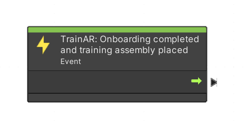
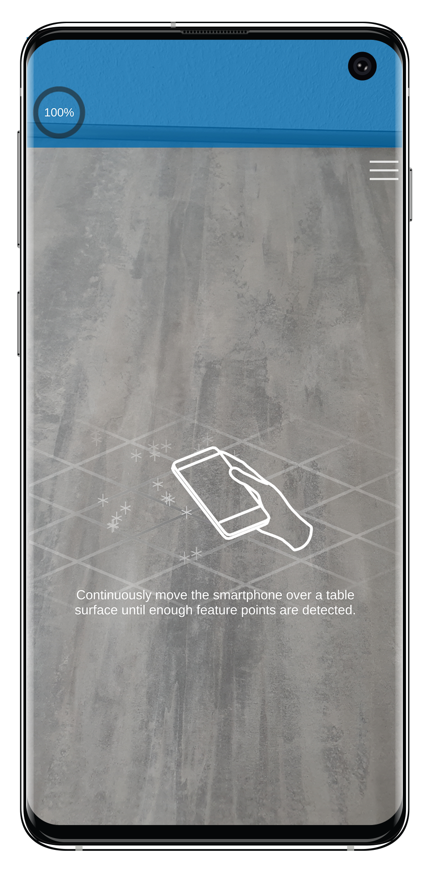

Start Training Node
The (green) Visual Scripting node called "TrainAR: Onboarding completed and training assembly placed" is an event node that is automically executed when the TrainAR framework recognizes that the user of the training finished watching the onboarding, a surface was found and the training assembly was placed by the user. It acts as a starting point for a TrainAR training created by the author.
There should be only one "TrainAR: Onboarding completed and training assembly placed" node present in a TrainAR Stateflow.
Note: While all other TrainAR nodes can be found under Right Click -> "TrainAR", the starting node is located under Right Click -> "Events".
| TrainAR Node | Result |
|---|---|
|  |  |